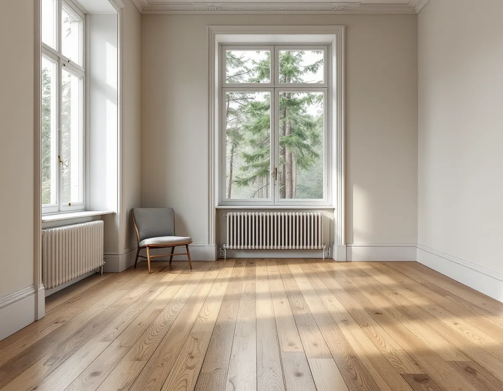
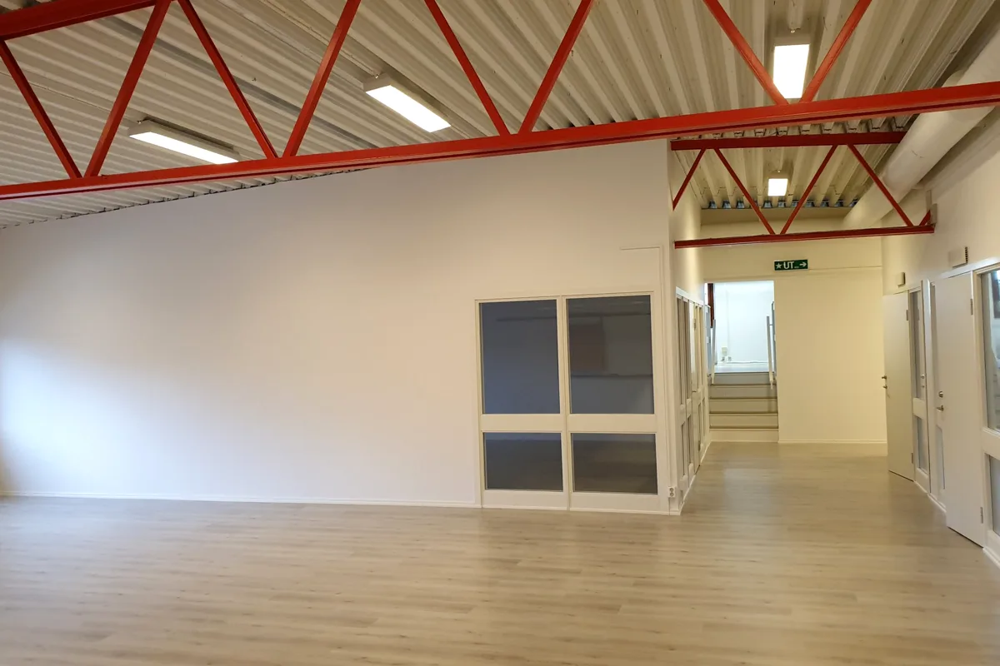

Besök i huset
Vi går igenom rummen, lyfter en list där det behövs och ser vad som ligger under nuvarande golv.
Bromma rymmer både trädgårdsstädernas villor från 1920-talet och de gula och röda smalhusen från åren kring andra världskriget. Golvjobben ser olika ut i de två miljöerna: i villan handlar det ofta om att ta fram och slipa det gamla trägolvet, i lägenheten om att lägga nytt utan att störa föreningen. Geal Entreprenad AB lägger och slipar golv i hela Bromma, med gratis platsbesök och skriftligt kostnadsförslag.

Stadsmuseets text om Stora Mossen beskriver hur planerna för området fastslogs 1926, som en fortsättning på de trädgårdsstäder som funnits i Äppelviken och Ulvsunda sedan 1910-talet. En stor del av husen stod klara 1927–1929. De är nästan identiska: två våningar, flacka sadeltak, enkla rektangulära planer och relativt stora fönster. De flesta ritades av arkitekten Edvin Engström, med klassicistiska villor i den östra delen och funktionalistiska i den västra.
För golvläggaren betyder ett sådant hus att det kan finnas mer under ytan än man tror. Under en heltäckningsmatta eller en senare plastmatta ligger ibland de ursprungliga brädorna kvar. Innan något rivs lyfter vi därför en golvlist eller en tröskel i ett hörn och tittar på vad som finns under – det avgör om rummet ska slipas eller få ett nytt golv.

Ett gammalt trägolv som har legat dolt i årtionden är ofta i bättre skick än det slitna golvet runt omkring, eftersom mattan har skyddat det. Spikhål, missfärgningar efter mattlim och enstaka skadade brädor går att åtgärda: hålen fylls, de sämsta brädorna byts mot likvärdiga och golvet slipas i flera omgångar innan det får sin nya yta.
Ibland är det ändå bättre att lägga nytt. Har brädorna kapats vid en tidigare ombyggnad, saknas stora partier eller sviktar golvet för att bjälklaget har satt sig, blir det ett nytt golv ovanpå ett upprättat underlag. Vilken väg som är rimligast skriver vi in i kostnadsförslaget, så att du kan jämföra. Mer om material och ytbehandlingar finns på sidan om golvläggning.
Abrahamsberg och Åkeslund stadsplanerades i slutet av 1930-talet och byggdes 1937–1945 med smalhus i tre våningar. Enligt Stadsmuseet var idealet hus i park, där varje lägenhet skulle få sol, ljus och luft. Abrahamsberg byggdes av gult tegel och kallades den gula staden, Åkeslund av rött tegel och blev den röda staden.
Bor du i bostadsrätt i ett av husen säger bostadsrättslagen att du på egen bekostnad ska hålla lägenheten i gott skick, och golvet ingår normalt i det ansvaret om stadgarna inte säger annat. Samtidigt kräver lagens 7 kap. 7 § styrelsens tillstånd för bland annat ingrepp i bärande konstruktion och ändring av ledningar för värme eller vatten. Ett vattenburet golvvärmesystem kopplat till husets värme är ett sådant fall. Byts golvet i ett badrum blir det ett våtrumsjobb – se badrumsrenovering i Bromma.
Har villan en källare som har gjorts om till tvättstuga, gästrum eller arbetsrum ligger golvet där oftast på betong, och trä tar upp fukt och sväller när den relativa fuktigheten är hög. Golvbranschen rekommenderar att fukten i bjälklaget kontrolleras innan avjämningsmassa läggs, och att mätningen görs av en fuktkontrollant inom RBK.
Branschens limrekommendationer lägger ansvaret för att mätningen blir gjord på beställaren. I praktiken samordnar vi den åt dig, så att resultatet finns innan material beställs och golvtyp väljs.
Ett golv som har legat under en matta i många år har ofta en annan ton än man väntar sig när det är nyslipat. Därför gör vi en provyta på ett undanskymt ställe, till exempel i en garderob, innan hela rummet behandlas. Där syns hur träet tar emot lack, olja eller såpa och om missfärgningar efter mattlimmet behöver döljas med en pigmenterad behandling.
I hall och kök, där det slits mest, brukar en tålig lack vara det praktiska valet. I sovrum och vardagsrum kan en oljad yta passa bättre, eftersom den går att bättra där den slits utan att hela golvet slipas om.
Vi går igenom rummen, lyfter en list där det behövs och ser vad som ligger under nuvarande golv.
Du får vårt förslag på om golvet ska tas fram och slipas eller ersättas, och varför.
Arbete och material står på separata rader, liksom förarbeten som rivning och uppriktning.
Mattor och lim tas bort, lösa brädor skruvas fast och underlaget rätas upp.
Golvet slipas i flera steg eller läggs nytt, och lister och trösklar anpassas.
Lack, olja eller såpa läggs på, och vi går igenom skötseln med dig.
Att slipa och byta golv räknas som rotarbete hos Skatteverket, både i småhus och i bostadsrätt. I en bostadsrätt gäller avdraget arbete som utförs inne i bostaden. Att ta bort en plastmatta och lägga trägolv räknas som en förbättring och ger också avdrag.
Avdraget är 30 procent av arbetskostnaden, högst 50 000 kr per person och år och högst 75 000 kr tillsammans med rutavdrag. Material och resor ingår inte. Geal drar avdraget direkt på fakturan.
I en äldre villa avgör golvets skick under mattan och hur mycket bjälklaget behöver rättas upp mest. I en lägenhet väger rivning, bärande av material i trapphuset och föreningens krav på underlaget tyngre. Valet mellan slipning och nytt golv påverkar förstås också. Platsbesöket är gratis och du får ett skriftligt kostnadsförslag.
Parkett, trägolv, klinker och slipning.
Golvläggning i Stockholm →Takbyte, takbesiktning och plåtarbeten.
Takläggare i Bromma →Trädgårdsstäder, tegel och funkistak.
Takrenovering i Bromma →Väggar och snickerier innan golvet läggs.
Målare i Bromma →Nytt kök i villa och småstuga.
Köksrenovering i Bromma →Altan, dörrar och snickerier.
Snickare i Bromma →Panel, puts och isolering.
Fasadrenovering i Bromma →Vind, bärande väggar och en andra bostad.
Byggföretag i Bromma →Småspröjs, småstugor och funkis i Bromma.
Fönsterbyte i Bromma →Kupor, låga tak och bleck i Bromma.
Plåtslagare i Bromma →Lertegel, småstugor och solceller i Bromma.
Takbyte i Bromma →Småstugor, trädgårdsstad och prickmark.
Tillbyggnad i Bromma →